สกิลสาย Alchemist Doctor
|
| 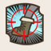 |
MaimShot
ยิงขาเป้าหมายทำให้ติดสถานะ Maim ลดความเร็วเหลือ 2.0
สถานะ Active เลเวลสูงสุด 4
|
| 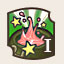 |
Mix
ผสมยาเพิ่ม HP 3 ขวด กระจายลงพื้น
สถานะ Active เลเวลสูงสุด 4
|
| 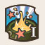 |
Shake
ผสมยาเพิ่ม SP 3 ขวด กระจายลงพื้น
สถานะ Active เลเวลสูงสุด 3
|
| 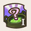 |
Miracle Blend
(พัฒนาจากShake)
สุ่มผสมยาหายตัว/ตัวเล็ก/ขยายร่าง หรือ
ยาพิษ 3 ขวด ลงพื้น
สถานะ Active เลเวลสูงสุด 1
|
| 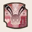 |
Alchemist Lab
ทำให้สามารถทำยาขั้นสูงและเพิ่มระยะเวลาของ Miracle Blend
สถานะ Passive เลเวลสูงสุด 4
|
| 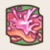 |
Sticky Gum
ผสมหมากฝรั่งปาลงพื้น ลดการเคลื่อนไหวของสิ่งที่เข้ามาติดในระยะ
สถานะ Active เลเวลสูงสุด 2
|
| 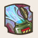 |
Acidic Field
(พัฒนาจาก
Sticky Gum)
ผสมไอกรดที่ทำความเสียหาย และลด 20 DEF เป้าหมายในระยะ
สถานะ Active เลเวลสูงสุด 2
|
| 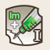 |
Immune Shot
ลดเลเวลสถานะผิดปกติของเป้าหมายลงและให้สถานะ Immunity
สถานะ Active เลเวลสูงสุด 1
|
| 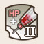 |
Boost Shot
(พัฒนาจากImmune Shot)
ทำให้เป้าหมายติดสถานะ boost
สถานะ Active เลเวลสูงสุด 1
|
| 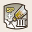 |
Heat Shot
(พัฒนาจาก
Boost Shot)
ทำให้เป้าหมายติดสถานะ Heat เพิ่มค่าพลัง TAL
สถานะ Active เลเวลสูงสุด 1
|
| 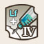 |
Life Shot
(พัฒนาจาก
Heat Shot)
ทำให้เป้าหมายติดสถานะ Auto Life คืนชีวิตให้ 100 hp
เมื่อตายหรือเพิ่ม HP สอง
สถานะ Active เลเวลสูงสุด 1
|
| 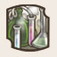 |
Medical Enhancement
เพิ่มเลเวลและเวลาของ Immune Shot, Boost Shot,
Heat Shot และ Life Shot
สถานะ Passive เลเวลสูงสุด 3
|
| 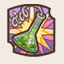 |
Rapid Trance
(พัฒนาจากMedical Enhancement)
ผลิตยาได้โดยไม่ต้องผสมและสกิลสาย A
ไม่มี Cooldown ชั่วขณะหนึ่ง
สถานะ Active เลเวลสูงสุด 1
|
| 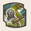 |
Gorgon Shot
ยิงลำแสงให้เป้าที่โดนกลายเป็นหินและรับ Damageสูงขึ้นชั่วขณะหนี่ง
สถานะ Active เลเวลสูงสุด 2
|